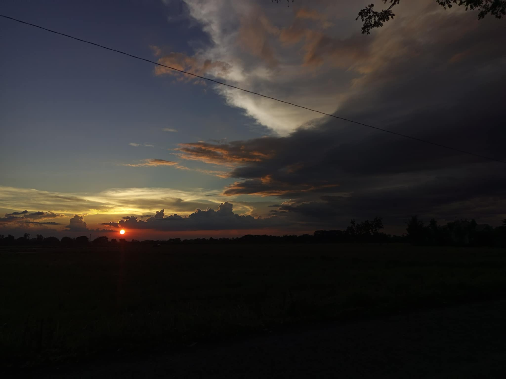

Sunsets are powerful because of their visual beauty, symbolic meaning (endings and new beginnings), emotional impact (peace, awe, nostalgia), and their ability to inspire reflection.
Sunset's beauty stems from its vibrant colors, dramatic light, tranquil atmosphere, and symbolic representation of endings and new beginnings, inspiring awe and reflection.
That's a beautiful phrase! It evokes a sense of peace, tranquility, and the beauty of the natural world. What comes to mind when you think of a "sunset moment".